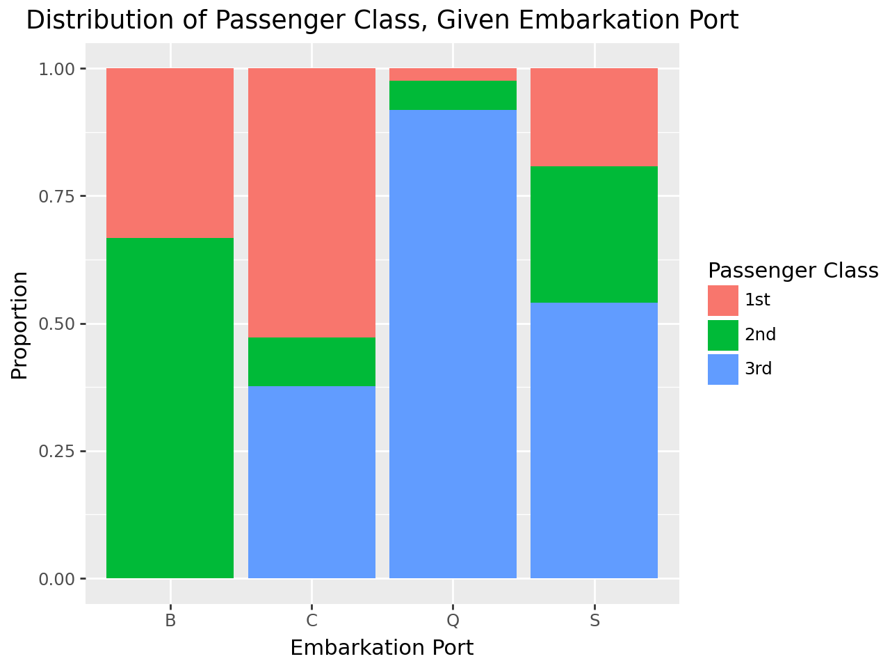

import numpy as np
import pandas as pd
# Import the titanic dataset here
data_dir = "https://dlsun.github.io/pods/data/"
df_titanic = pd.read_csv(data_dir + "titanic.csv")
Titanic Wrangling
In this practice activity you’ll continue to work with the titanic dataset in ways that flex what you’ve learned about both data wrangling and data visualization.
df_titanic.head()| name | gender | age | class | embarked | country | ticketno | fare | survived | |
|---|---|---|---|---|---|---|---|---|---|
| 0 | Abbing, Mr. Anthony | male | 42.0 | 3rd | S | United States | 5547.0 | 7.11 | 0 |
| 1 | Abbott, Mr. Eugene Joseph | male | 13.0 | 3rd | S | United States | 2673.0 | 20.05 | 0 |
| 2 | Abbott, Mr. Rossmore Edward | male | 16.0 | 3rd | S | United States | 2673.0 | 20.05 | 0 |
| 3 | Abbott, Mrs. Rhoda Mary 'Rosa' | female | 39.0 | 3rd | S | England | 2673.0 | 20.05 | 1 |
| 4 | Abelseth, Miss. Karen Marie | female | 16.0 | 3rd | S | Norway | 348125.0 | 7.13 | 1 |
df_titanic.describe()| age | ticketno | fare | survived | |
|---|---|---|---|---|
| count | 2205.000000 | 1.316000e+03 | 1291.000000 | 2207.000000 |
| mean | 30.436735 | 2.842157e+05 | 33.404760 | 0.322157 |
| std | 12.159677 | 6.334726e+05 | 52.227592 | 0.467409 |
| min | 0.166667 | 2.000000e+00 | 3.030500 | 0.000000 |
| 25% | 22.000000 | 1.426225e+04 | 7.180600 | 0.000000 |
| 50% | 29.000000 | 1.114265e+05 | 14.090200 | 0.000000 |
| 75% | 38.000000 | 3.470770e+05 | 31.060750 | 1.000000 |
| max | 74.000000 | 3.101317e+06 | 512.060700 | 1.000000 |
1. Filter the data to include passengers only. Calculate the joint distribution (cross-tab) between a passenger’s class and where they embarked.
passengers = df_titanic[
(df_titanic['class'] == '3rd') |
(df_titanic['class'] == '2nd') |
(df_titanic['class'] == '1st')
]
crosstab= pd.crosstab(passengers["class"], passengers["embarked"])
print(passengers)
print(crosstab) name gender age ... ticketno fare survived
0 Abbing, Mr. Anthony male 42.0 ... 5547.0 7.1100 0
1 Abbott, Mr. Eugene Joseph male 13.0 ... 2673.0 20.0500 0
2 Abbott, Mr. Rossmore Edward male 16.0 ... 2673.0 20.0500 0
3 Abbott, Mrs. Rhoda Mary 'Rosa' female 39.0 ... 2673.0 20.0500 1
4 Abelseth, Miss. Karen Marie female 16.0 ... 348125.0 7.1300 1
... ... ... ... ... ... ... ...
1314 Yvois, Miss. Henriette female 24.0 ... 248747.0 13.0000 0
1315 Zakarian, Mr. Mapriededer male 22.0 ... 2656.0 7.0406 0
1316 Zakarian, Mr. Ortin male 27.0 ... 2670.0 7.0406 0
1317 Zenni, Mr. Philip male 25.0 ... 2620.0 7.0406 1
1318 Zimmermann, Mr. Leo male 29.0 ... 315082.0 7.1706 0
[1317 rows x 9 columns]
embarked B C Q S
class
1st 3 143 3 175
2nd 6 26 7 245
3rd 0 102 113 4942. Using the joint distribution that calculated above, calculate the following:
- the conditional distribution of their class given where they embarked
- the conditional distribution of where they embarked given their class
Use the conditional distributions that you calculate to answer the following quesitons:
- What proportion of 3rd class passengers embarked at Southampton?
- What proportion of Southampton passengers were in 3rd class?
# P(class | embarked)
conditional_class_given_embark = pd.crosstab(
passengers["class"],
passengers["embarked"],
normalize= "columns"
)
print(conditional_class_given_embark)embarked B C Q S
class
1st 0.333333 0.527675 0.024390 0.191466
2nd 0.666667 0.095941 0.056911 0.268053
3rd 0.000000 0.376384 0.918699 0.540481# P(Embarked | Class)
conditional_embark_given_class = pd.crosstab(
passengers["class"],
passengers["embarked"],
normalize= "index"
)
print(conditional_embark_given_class)embarked B C Q S
class
1st 0.009259 0.441358 0.009259 0.540123
2nd 0.021127 0.091549 0.024648 0.862676
3rd 0.000000 0.143865 0.159379 0.696756The proportion of 3rd class passengers that embarked at South Hampton was 69.67%.
The proportion of South Hampton passengers that were 3rd class was 54.01%
3. Make a visualization showing the distribution of a passenger’s class, given where they embarked.
Discuss the pros and cons of using this visualization versus the distributions you calculated before, to answer the previous questions.
The barchat below provides a clear visualization showing the distribution of 1, 2, or 3 passengers at the embarkation ports.
The advantage to this is that individuals can clearly see where the majority of people embarked and an approximate amount of them in specific class given where they embarked.
However, the disadvantage of the visualization is that we cannot see the specific numerical values.
While the barchart can provide simple visualizations, it represents proportions and not specific counts. This can lead to misinterpretations.
import plotnine as p9
plotBar = (
p9.ggplot(data = passengers)
+p9.aes(x= "embarked", fill= "class")
+p9.geom_bar(position= "fill")
+p9.labs(
x= "Embarkation Port",
y= "Proportion",
title= "Distribution of Passenger Class, Given Embarkation Port"
)
+p9.scale_fill_discrete(name= "Passenger Class")
)
plotBar.show()